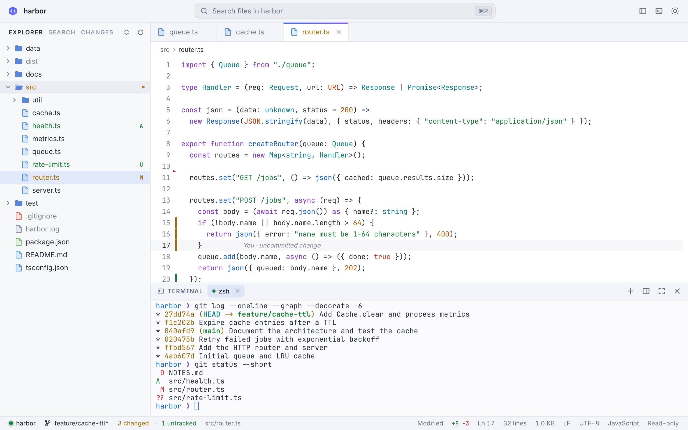

A real terminal, built in
A native PTY and a from-scratch xterm-grade emulator: truecolor, mouse, alternate screen, bracketed paste and crisp box drawing. Run Claude Code, Codex, aider, vim or htop right next to the code.
Free Open source · MIT licensed
Codeviewer is a fast, read-only code viewer with a real terminal built in. Point your favourite CLI agent at a project and watch every file it touches update live, with git telling you exactly what changed.
Verify your download · SHA-256 and signed build provenance for every file

Everything an IDE shows you, nothing that lets anything slip in by accident: Codeviewer never edits a file.
A native PTY and a from-scratch xterm-grade emulator: truecolor, mouse, alternate screen, bracketed paste and crisp box drawing. Run Claude Code, Codex, aider, vim or htop right next to the code.
Files reload in place as they change on disk. Changed lines flash, the explorer marks them, and nothing you are reading jumps.
Status letters in the explorer, gutter markers against HEAD with a peek at the old lines, inline blame, branch, ahead/behind and merge state. It never writes to your repository.
Virtualized everything: 100k-line files open instantly, quick-open searches 200k paths as you type, and the terminal streams megabytes per second.
The window can only reach its own local server. Header-token auth, DNS-rebinding and CSRF guards, and git hardened against hostile repositories. Reviewed adversarially.
A small native Mac app on the system WebKit, with real menus, window tabs and a folder picker. Built with Bun and TypeScript and zero third-party dependencies.
Click any gutter marker to peek at the lines as they were in the last commit. Inline blame follows your cursor; the status bar shows the branch, how far ahead or behind you are, and every changed file is one ⌘⇧G away.

Codeviewer serves a real terminal, so it was designed and then attacked by reviewers looking for a way in. Every confirmed finding was fixed and pinned with a test.
The Mac window blocks every request except its own local port. External links open in your browser, never inside the app.
A random 256-bit token lives in the URL fragment and a request header. No cookies, no token in process lists, Host and Origin checked on every request.
Git runs without filters, textconv, signature checks, fsmonitor or submodules, and never writes your index. Read the design and review notes.
The latest release. The apps are self-contained; the CLI binaries serve the viewer to any browser (codeviewer . --no-open).
| Platform | File | SHA-256 |
|---|---|---|
macOSApple silicon |
on GitHub | |
macOSIntel |
on GitHub | |
Linuxx86-64 |
on GitHub | |
LinuxARM64 |
on GitHub |
macOS CLIApple silicon |
on GitHub | |
macOS CLIIntel |
on GitHub | |
Linux CLIx86-64 (glibc) |
on GitHub | |
Linux CLIARM64 (glibc) |
on GitHub | |
Linux CLIx86-64 (musl / Alpine) |
on GitHub |
All files, SHA256SUMS and its signature are on the latest GitHub release.
Every release is built by GitHub Actions from a tagged commit, on a clean runner. Independent checks prove the file you have is that build: its checksum, the release signature, and where it was built.
curl -LO https://github.com/BackendStack21/codeviewer/releases/download/<tag>/Codeviewer-<version>-macos-arm64.dmg
curl -LO https://github.com/BackendStack21/codeviewer/releases/latest/download/SHA256SUMS
curl -LO https://github.com/BackendStack21/codeviewer/releases/latest/download/SHA256SUMS.sigIntel Mac: use Codeviewer-<version>-macos-x64.dmg.
shasum -a 256 -c SHA256SUMS --ignore-missingExpect Codeviewer-<version>-macos-arm64.dmg: OK. It must also match the hash in the table above.
curl -fsSLo codeviewer.pub https://raw.githubusercontent.com/BackendStack21/codeviewer/main/packaging/update-key.pub
openssl pkeyutl -verify -pubin -inkey codeviewer.pub -rawin -in SHA256SUMS -sigfile SHA256SUMS.sigExpect Signature Verified Successfully. Needs OpenSSL 3 or newer (brew install openssl; the built-in one is LibreSSL). This is the same Ed25519 signature the in-app updater checks before installing anything.
# GitHub CLI: https://cli.github.com
gh attestation verify Codeviewer-<version>-macos-arm64.dmg --repo BackendStack21/codeviewerThis checks a Sigstore-signed provenance statement logged in a public transparency log. It proves the file came out of this repository's release workflow, at a specific commit. It does not depend on this website.
Open the DMG and drag Codeviewer to Applications. The app is not notarized by Apple, so the first launch needs right-click → Open, or:
xattr -dr com.apple.quarantine /Applications/Codeviewer.appcurl -LO https://github.com/BackendStack21/codeviewer/releases/download/<tag>/codeviewer-<version>-linux-x64.tar.gz
curl -LO https://github.com/BackendStack21/codeviewer/releases/latest/download/SHA256SUMS
curl -LO https://github.com/BackendStack21/codeviewer/releases/latest/download/SHA256SUMS.sigARM64: use codeviewer-<version>-linux-arm64.tar.gz.
sha256sum -c SHA256SUMS --ignore-missingExpect codeviewer-<version>-linux-x64.tar.gz: OK. It must also match the hash in the table above.
curl -fsSLo codeviewer.pub https://raw.githubusercontent.com/BackendStack21/codeviewer/main/packaging/update-key.pub
openssl pkeyutl -verify -pubin -inkey codeviewer.pub -rawin -in SHA256SUMS -sigfile SHA256SUMS.sigExpect Signature Verified Successfully. Needs OpenSSL 3 or newer. This is the same Ed25519 signature the in-app updater checks before installing anything.
gh attestation verify codeviewer-<version>-linux-x64.tar.gz --repo BackendStack21/codeviewerProves the file came out of this repository's release workflow at a specific commit, independently of this website.
tar -xzf codeviewer-<version>-linux-x64.tar.gz
./codeviewer/install.shAdds codeviewer to ~/.local/bin and a desktop entry. The bundled browser is ungoogled-chromium, itself pinned by SHA-256 in the repository.
You need Bun 1.3.5 or newer (and Xcode command line tools for the Mac app). There are no dependencies to install.
git clone https://github.com/BackendStack21/codeviewer.git
cd codeviewer && git checkout <tag>
bun run test
bun run build:local